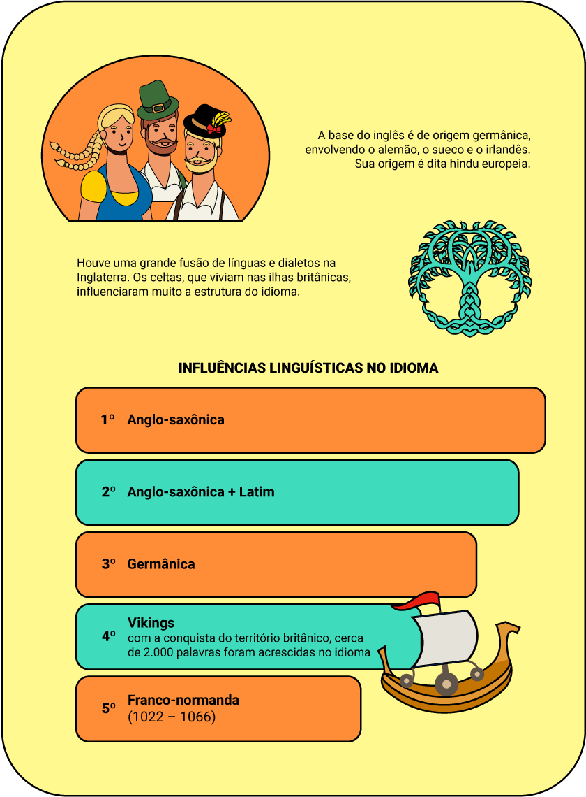

O que é linguagem?
Linguagens e suas tecnologias
Quantas vezes vocês já devem ter ouvido ou, até mesmo, falado frases como “Eu não sei falar direito” e “Eu não sei escrever direito”, como se a pessoa não soubesse se comunicar, mas a realidade não funciona assim. Na escola, aprendemos a chamada “norma padrão”, que são as regras que determinam o uso correto da língua portuguesa, porém, é importante lembrar que elas devem ser utilizadas nas situações formais de comunicação, como a escrita de um texto, a elaboração de um documento, a apresentação de uma palestra, entre outros. Entretanto, a norma padrão não é a única forma de linguagem disponível para você se expressar.
Diariamente, há a necessidade de você se comunicar com sua família, amigos, colegas de trabalho ou de escola, entre outros, e você sabe como isso é possível? Nas situações informais de comunicação, é usada a linguagem informal, ou seja, sem a preocupação com o uso normativo da língua, porque o principal objetivo dela é a comunicação, fazer com que as pessoas a entendam. Dessa forma, é usada uma linguagem espontânea, mais despojada, nas situações informais. Em cada situação comunicativa, ou em cada contexto, adapta-se a forma de comunicação, por isso, não existe uma linguagem certa e outra errada, mas uma linguagem para cada situação. É a capacidade de comunicar-se com competência.
É importante pontuar que, quando falamos em linguagem, não estamos nos referindo apenas à língua falada, e sim ao conjunto de fatores que constituem o processo de comunicação. Por exemplo, nós costumamos utilizar uma roupa mais despojada para ambientes informais, ao mesmo tempo que utilizamos roupas mais sóbrias para ambientes formais. As roupas, assim como a fala, também comunicam algo, e devem estar de acordo com o contexto em que estão inseridas.
Em outras palavras.
Linguagem: É o meio de comunicação de ideias, sentimentos, valores, etc, através da utilização de diferentes formas de símbolos, não apenas a fala e a escrita, como também gestos, cores, e os diversos tipos de expressão artística, como a dança, a pintura, a música, dentre outros.
Língua: É um sistema organizado de sons e gestos que possibilitam a comunicação.
E quando precisamos nos comunicar com o restante do mundo?
Passe o mouse ou toque para ver a tradução.
Tradução: Olá, pessoal! Bem-vindos. Estou muito feliz por estar aqui com vocês nesta nova oportunidade de aprendizado que vocês escolheram. Podem contar comigo sempre que precisar. Vamos aprender juntos. Estou aqui para auxiliá-los
Hello, people! Welcome. I am so happy to be here with you in this new opportunity of learning that you have chosen. You can count on me whenever you need. Let’s learn together. I am here to help you.
Um pouco de história…
Para compreender o funcionamento desta língua adotada universalmente, faça um breve passeio por sua história.
O inglês tem sua origem no ramo germânico, que compreende o alemão, o sueco e o irlandês, e é chamado de indo-europeu.
Houve uma grande fusão de línguas e dialetos na Inglaterra. Os celtas, que viviam nas ilhas britânicas, influenciaram muito a estrutura do idioma.
Influências linguísticas no idioma
- 1º Anglo-saxônica
- 2º Anglo-saxônica + Latim
- 3º Germânica
- 4º Vikings – com a conquista do território britânico, cerca de 2.000 palavras foram acrescidas no idioma
- 5º Franco-normanda (1022 – 1066)
Observando os idiomas que originaram o inglês, pode-se perceber por que algumas palavras parecem familiares, uma vez que o português tem origem no latim.
Ao compreender de forma mais clara como o inglês funciona, é possível utilizá-lo para a comunicação e a compreensão de diversos assuntos pertinentes ao dia a dia.
Na sociedade antiga, apenas três idiomas eram adotados: o clero (religiosos) utilizava o latim, a nobreza (senhores feudais) utilizava o francês e o proletariado (classe dos trabalhadores) utilizava o inglês.
Durante cerca de trezentos anos, o inglês foi utilizado apenas verbalmente, pois, na época, apenas a nobreza tinha acesso à educação. Esse fato fez com que o inglês fosse formado, gramaticalmente, por estruturas muito simples quando comparado com outros idiomas. O uso de uma mesma palavra em diferentes classes gramaticais é um exemplo, veja:
TO WATCH - verbo
To watch: verbo (assistir)
I watch TV: Eu assisto à TV
WATCH - substantivo
Watch: substantivo (relógio de pulso)
This is my new watch: Este é o meu novo relógio
Mas então como saber quando o significado é um ou outro?
Keep calm! No decorrer das aulas, você perceberá que, na língua inglesa, o contexto da fala é muito importante. As palavras sozinhas têm seu significado próprio, porém, quando empregadas em frases, podem assumir diferentes significados. No início, pode parecer difícil, mas isso facilita o uso.
A linguagem é considerada um sistema e, por meio dele, os sentimentos são expressados. Para isso, são empregados os códigos verbais e não verbais para comunicar ideias. Veja como funcionam.
Os códigos verbais, ou a linguagem verbal, são o uso da escrita ou da fala como meio de comunicação. Ao falar com alguém ou ler um livro ou revista, você está utilizando a palavra como código. Esse tipo de linguagem é conhecido como linguagem verbal, sendo a palavra escrita ou falada a forma pela qual ocorre a comunicação. A linguagem verbal é a forma de comunicação mais presente no cotidiano, pois, por meio dela, ideias e pensamentos são expostos aos outros.
Imagine que, na aula de língua inglesa, a professora trouxe um vocabulário sobre saúde, que o professor de educação física já havia mencionado também, em sua aula, pois são termos muito conhecidos que serão trabalhados no tópico estrangeirismos. Observe a figura 1 a seguir:
![A figura apresenta um quadro de fundo cinza escuro, com palavras em inglês, que se referem à saúde, escritas em letras maiúsculas brancas, a maioria na posição horizontal. Na parte superior, em letras brancas e menores, estão escritas as palavras Healthy, Vitamins, Food, Sport, Gym, Exercise (que está circulada), Muscles, Weight, Intake e Diet. No centro, em letras maiores e brancas, está escrita a palavra Fitness. Logo abaixo, escritas em letras menores e brancas, estão escritas as palavras Success, Happiness, Energy (que está sublinhada), Vital, Activity, Wellness (que está em diagonal), Body, Athletic e Clean.](assets/img/02_linguagem/figura1.png)
Desse modo, a linguagem verbal foi utilizada tanto na aula de língua inglesa como na aula de educação física, já que em ambas foram usadas palavras escritas e faladas para se trabalhar os estrangeirismos com o tema saúde.
Você finalizou o segundo conteúdo! No próximo conteúdo vamos falar sobre o estrangeirismo. Esperamos você lá!